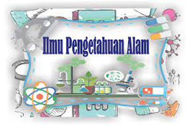
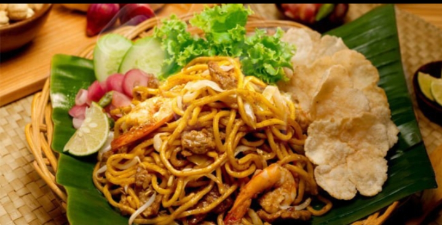

Saya adalah chindy seorang pelajar di Sekolah Menengah Kejuruan Negeri-9,
saya bersekolah dengan jurusan rpl, di jurusan ini saya dapat banyak pelajaran,
bukan hanya mengenai teknologi seperti Website, App, Data Base, tapi juga mengenai
logika, pemecahan masalah dan seni.
Hobi
Salah satu hobi saya adalah memasak, karena saya menikmati proses menciptakan berbagai masakan yang lezat dan sehat. Memasak memberi saya kesempatan untuk
bereksperimen dengan resep baru, menggabungkan bahan-bahan yang berbeda, dan berbagi hasilnya dengan keluarga dan teman-teman, sehingga menciptakan momen kebersamaan yang berharga.
Pelajaran Favorit

Pelajaran favorit saya adalah IPA karena saya sangat tertarik dengan fenomena alam dan prinsip-prinsip ilmiah yang menjelaskan bagaimana dunia bekerja. Dalam pelajaran ini, saya menikmati eksperimen praktis yang memungkinkan saya melihat teori-teori menjadi kenyataan, serta memahami konsep-konsep seperti fisika, biologi, dan kimia yang saling terkait. Selain itu, belajar tentang lingkungan dan cara menjaga keberlanjutan juga semakin memotivasi saya untuk berkontribusi dalam menjaga bumi.
Makanan Favorit

Makanan favorit saya adalah Mie Aceh, karena rasanya yang kaya rempah dan pedas membuatnya sangat menggugah selera. Hidangan ini terbuat dari mie yang kenyal dan biasanya disajikan dengan berbagai pilihan protein seperti daging sapi, ayam, atau udang, serta sayuran segar. Kombinasi bumbu seperti cabai, kunyit, dan daun salam memberikan cita rasa yang unik dan mendalam. Saya juga suka menikmati Mie Aceh dengan pelengkap seperti acar, limau, dan kerupuk, yang semakin menambah kelezatannya. Setiap kali menikmatinya, saya merasa seolah-olah sedang merasakan kekayaan budaya kuliner Indonesia.
Pengalaman
"Pengalaman saya menari di sekolah dimulai waktu ikut ekstrakurikuler tari. Awalnya, saya agak malu karena saya nggak terlalu pede dengan kemampuan saya. Banyak teman yang udah lebih jago, jadi saya merasa agak ketinggalan. Tapi, pelatih kami baik banget dan nggak pernah nyuruh kami berhenti, malah selalu bilang kalau kita harus berani coba dan nggak takut salah. Ingat banget waktu pertama kali latihan, saya kesulitan banget ikutin gerakan-gerakan yang cepat, dan kadang merasa frustasi. Tapi saya nggak mau nyerah, jadi saya latihan terus di rumah, sambil nonton video dan nanya-nanya ke teman-teman."